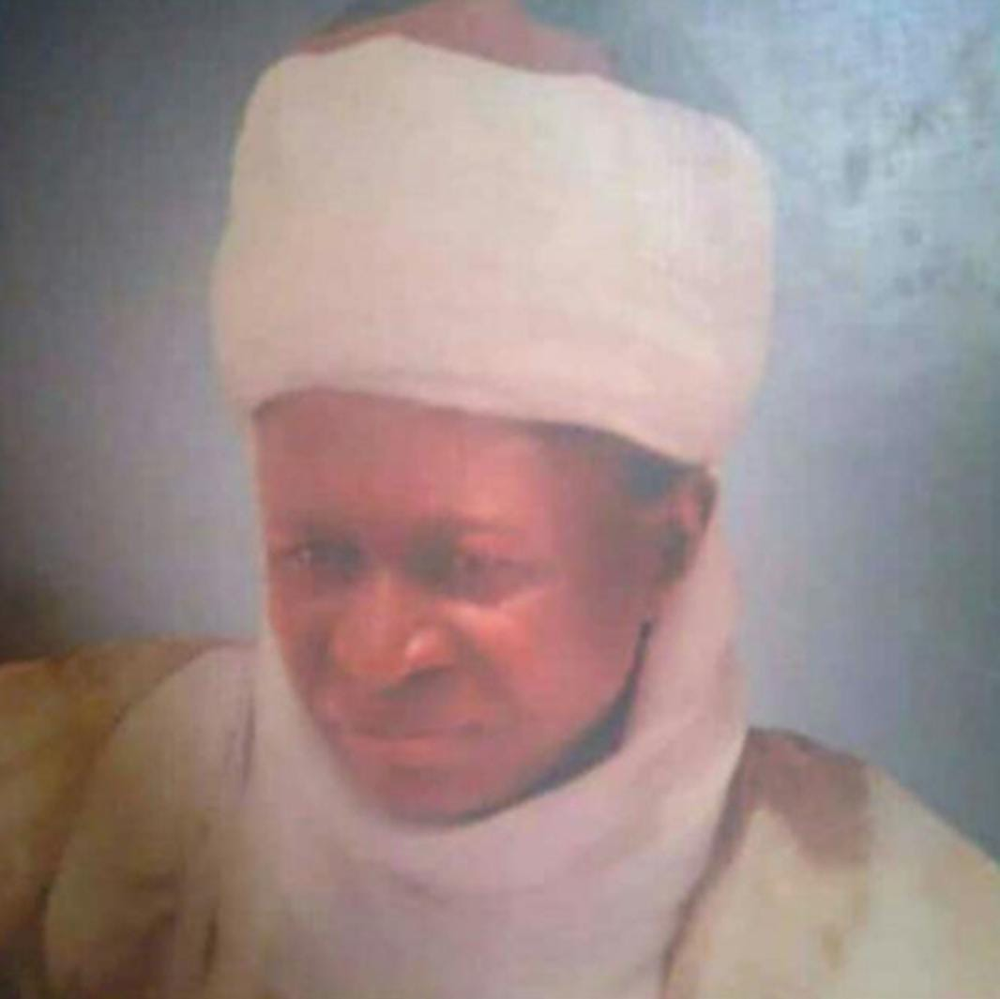

Musa Ibrahim Azara, born in Azara kingdom in the late 1940s was an amicable man, full of strength and vigor. Nicknamed 'Mai rubutu a ruwa' due to the strange circumstances that followed his early childhood, he was loved by many.
After his primary school in Awe, he attended Command Secondary School, Suleja in the 1960s, then further went on to study Accounting. His life was one with many turns. In his 20s, he worked in NDDC Kaduna as an Auditor, for a number of years. In 1980s, he worked as an accountant general, director of audits in Jos, the Plateau state capital. Afterwords, he headed Chairman Public Accounts Committee during the Babangida Administration. He resigned after a while. In 1991, he became the 12th Mai of the Azara Kingdom. The title Mai is the Kanuri name for King. In 1999, he became a Special Advisor (SA) to the then governor of Nasarawa state, Mr. Abdullahi Adamu. In the cold morning hours of June 12, 2001, he was assassinated in his car. His driver, and close friend were also murdered.
He is survived by 4 wives, 29 children and many grandchildren, among which is the debut author, Masha A. M. May Aljannah Firdaus be his final abode.
We all miss you abuelo. 😘
Click here to read more about Musa Ibrahim.